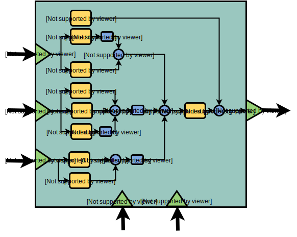

One important task in image processing applications is the color space conversion. Real-time images and videos are stored in RGB color space, because it is based on the sensitivity of color detection cells in the human visual system. In digital image processing the YCbCr color space is often used in order to take advantage of the lower resolution capability of the human visual system for color with respect to luminosity. Thus, RGB to YCbCr conversion is widely used in image and video processing [1].
Given a digital pixel represented in RGB format, 8 bits per sample, where 0 and 255 represents the black and white color, respectively, the YCbCr components can be obtained according to equations (1) to (3):
Equations (1) to (3): RGB to YCbCr conversion, source: [1]{kind=link}
Approximating the equations (1) to (3) to the nearest integer and replacing multiplication and division by shift registers, the equations (4) to (6) are obtained:
Equations (4) to (6){kind=link}
Image and Video consumes a lot of data. One of the reasons is because they are represented in the RGB format. However, is not worth to store or transmit information in this color space representaion, once it has a large bandwidth. Thus all the pixels should be converted to YCbCr to accomplish that.
A practical example
To understand the effect of converting RGB to YCbCr, we will use the Figure (1).
 Figure (1): rgb.png
Figure (1): rgb.png
Using Matlab or Octave can be done some processing on the image. For example, the code below reads the image file "rgb.png":
% RGB to YCbCr with Matlab I = imread('rgb.png'); figure(1), imshow(I);
A color image has three channels (red, green and blue components). To access each component of the image, the Matlab code below can be used:
% RGB to YCbCr with Matlab R = I(:,:,1); G = I(:,:,2); B = I(:,:,3); figure(2), imshow(R), fi gure(3),imshow(G),figure(4), imshow(B);
Each component of the image can be seen in Figures (2) to (4). Note that each channel has only the each corresponding color.
Figure (2): the red channel Figure (3): the green channel Figure (4): the blue channel{kind=link}
{kind=link}
{kind=link}
The Matlab provides the function rgb2ycbcr that converts an image from RGB to YCbCr. The script to convert the image from one space to another and to access each component (Y, Cb and Cr) can be seen below:
% RGB to YCbCr with Matlab I2 = rgb2ycbcr(I); Y = I2(:,:,1); Cb = I2(:,:,2); Cr = I2(:,:,3); figure(5),imshow(I2), fi gure(6), imshow(Y), figure(7), imshow(Cb),fi gure(8), imshow(Cb);
The converted image in the YCbCr space can be seen in Figure (5). It has three components: the lumminance Y, the blue difference Cb and the red difference Cr.
 Figure (5): the image in the YCbCr space
Figure (5): the image in the YCbCr space
The Y component only filters the luminance (brightness) of the image (see Figure (6)); the Cb and Cr components subtract the red and blue colors, respectively, from the image (see Figures (7) and (8)).
 Figure (6): the Y component
Figure (7): the Cb component
Figure (8): the Cr component
Figure (6): the Y component
Figure (7): the Cb component
Figure (8): the Cr component
{kind=link}
{kind=link}
Hardware implementation
The hardware implementation of the RGB to YCbCr converter may be done using equations (4) to (6). The computation is done using only shift registers and adders. Each component is described in Figures (9) to (11).
Figure (9): RGB to Y block Figure (10): RGB to Cb block  Figure (11): RGB to Cr block{kind=link}
{kind=link}
{kind=link}
The SystemVerilog implementation of the RGB2YCbCr converter can be seen below:
module RGB2YCbCr(rgb_if.in in, ycbcr_if.out out); always @(posedge in.clk)begin if(in.rst) begin out.Y <= 0; out.Cb <= 0; out.Cr <= 0; end else begin out.Y <= 16+(((in.R<<6)+(in.R<<1)+(in.G<<7)+in.G+(in.B<<4)+(in.B<<3)+in.B)>>8); out.Cb <= 128 + ((-((in.R<<5)+(in.R<<2)+(in.R<<1))-((in.G<<6)+(in.G<<3)+(in.G<<1))+(in.B<<7)-(in.B<<4))>>8); out.Cr <= 128 + (((in.R<<7)-(in.R<<4)-((in.G<<6)+(in.G<<5)-(in.G<<1))-((in.B<<4)+(in.B<<1)))>>8); end end endmodule : RGB2YCbCr
The module of the converter has two interfaces:
- The RGB interface rgb_if: contains the three components of the RGB pixel, plus the clock and reset signals
- The YCbCr interface ycbcr_if: contains the three components of the YCbCr pixel, plus the clock and reset signals
interface rgb_if(input logic clk, rst); logic [7:0] R, G, B; modport in(input clk, rst, R, G, B); endinterface
interface ycbcr_if(input clk, rst); logic [7:0] Y, Cb, Cr; modport out(input clk, rst, output Y, Cb, Cr); endinterface
The SystemVerilog implementation of the testbench of the RGB2YCbCr is shown below. Note that the ROM memory module provides the pixels to stimulate the RGB2YCbCr module.
`include "RGB2YCbCr.sv" `include "rgb_if.sv" `include "ycbcr_if.sv" parameter N_ADDR = 8; module ROM(input logic [2:0]address, output logic [23:0]data); always_comb begin case (address) 00: data <= 0; 01: data <= (123<<16)+(88<<8)+60; 02: data <= (100<<16)+(200<<8)+110; 03: data <= (50<<16)+(50<<8)+10; 04: data <= (251<<16)+(135<<8)+160; 05: data <= (185<<16)+(69<<8)+45; 06: data <= (196<<16)+(188<<8)+201; 07: data <= (132<<16)+(168<<8)+74; endcase end endmodule module top; logic clk; logic rst; logic [2:0] addr; logic [23:0] data; int i; initial begin clk = 0; rst = 1; #22 rst = 0; for(i = 0; i <= N_ADDR; i++)begin @(posedge clk) addr <= i; in.R <= data[23:16]; in.G <= data[15:8]; in.B <= data[7:0]; $display("R = %d G = %d B = %d", in.R,in.G, in.B); @(posedge clk) $display("Y = %d Cb = %d Cr = %d", out.Y, out.Cb, out.Cr); end $finish(); end always #5 clk = !clk; rgb_if in(clk, rst); ycbcr_if out(clk, rst); RGB2YCbCr rtl(in, out); ROM image(.address(addr), .data(data)); endmodule
Also available in GitHub.
References
[1] Keith Jack. Video demystified: a handbook for the digital engineer. Elsevier, 2011